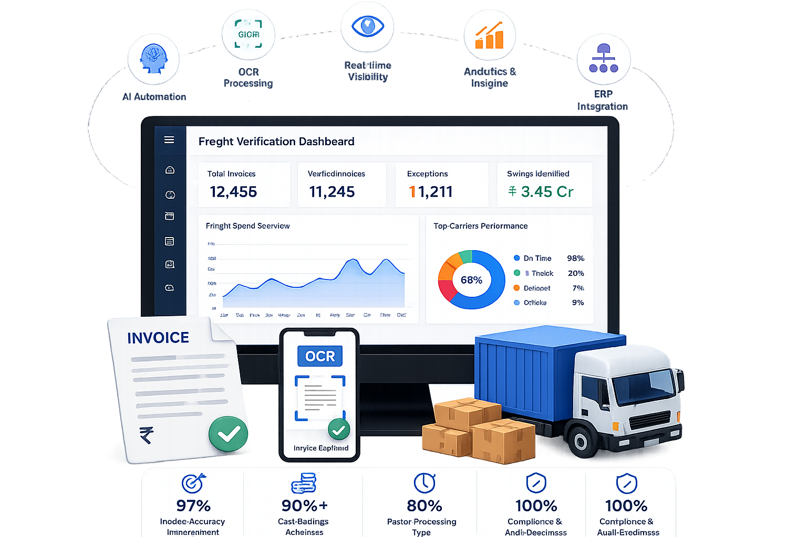

Lack of Real-Time Shipment Visibility
Limited shipment tracking makes it difficult to identify delays, monitor deliveries, and provide accurate customer updates.
A Logistics Control Tower is a centralized platform that provides real-time visibility across your logistics and supply chain operations. It connects data from transportation, warehouses, ERP systems, carriers, and GPS tracking into a single intelligent dashboard.
By consolidating information from multiple systems, businesses can easily monitor shipments, track deliveries, manage transportation performance, and improve operational efficiency across their logistics network.
An AI-Powered Logistics Control Tower uses Artificial Intelligence to detect delays, identify risks, generate proactive alerts, and deliver actionable insights that help businesses make faster decisions, reduce logistics costs, minimize disruptions, and ensure smooth supply chain operations.
Without a Logistics Control Tower, businesses often struggle with limited visibility, delayed decision-making, disconnected systems, and inefficient logistics operations. AngelTech Logistics solves these challenges with real-time visibility, AI-driven insights, proactive alerts, and intelligent logistics automation.
Limited shipment tracking makes it difficult to identify delays, monitor deliveries, and provide accurate customer updates.
Track shipments live and receive instant updates through a centralized logistics dashboard.
Traffic, weather conditions, route changes, and vehicle issues disrupt deliveries and impact customer satisfaction.
Detect delays and disruptions early with proactive alerts and predictive logistics intelligence.
Multiple systems and data sources create information gaps and slow operational decision-making.
Connect transportation, warehouses, ERP systems, carriers, and GPS tracking into a single platform.
Monitoring finished goods across warehouses and distribution centers becomes difficult without centralized tracking.
Monitor shipments, inventory, warehouses, and transportation operations from a single intelligent dashboard.
Manual issue handling delays resolution and increases operational risks and customer impact.
AI automatically detects issues, prioritizes exceptions, and accelerates corrective actions.
Poor route planning, inefficient resource utilization, and delayed responses increase logistics expenses.
Optimize routes, resources, and logistics operations to reduce transportation costs and improve efficiency.
AngelTech Logistics helps businesses gain complete operational visibility through intelligent logistics monitoring and AI-powered automation. Our Logistics Control Tower enables organizations to monitor shipments, optimize transportation, improve warehouse visibility, reduce disruptions, and make faster, smarter business decisions.
Track shipments in real time across multiple transportation modes while monitoring warehouses, inventory, and finished goods movement through one centralized dashboard.
Monitor every shipment using AI-driven insights to detect delays, route deviations, idle time, and delivery risks automatically before they impact operations.
Receive AI-powered alerts for shipment delays, missed milestones, route deviations, vehicle issues, and logistics exceptions for proactive issue resolution.
Optimize transportation planning and execution while monitoring carrier performance, warehouse operations, and inbound and outbound logistics activities.
Access real-time dashboards, transportation KPIs, carrier scorecards, and AI-driven analytics to improve logistics performance and operational efficiency.
Seamlessly integrate ERP, WMS, TMS, GPS tracking, IoT devices, fleet management software, and business applications into one intelligent logistics platform.
AngelTech Logistics' AI-Powered Logistics Control Tower connects your logistics data into a single intelligent platform, delivering real-time visibility, AI-driven insights, proactive alerts, and complete control over your logistics operations.
Integrate ERP, TMS, WMS, OMS, GPS tracking, IoT devices, fleet management software, and carrier systems into one platform.
Create a unified logistics ecosystem with seamless integrations.
Collect and consolidate live data from shipments, vehicles, warehouses, inventory, and transportation operations into one dashboard.
Gain complete logistics visibility from a single source of truth.
AI continuously monitors shipments, routes, vehicles, and logistics operations in real time.
Detect delays, route deviations, and operational risks automatically.
Receive notifications for shipment delays, vehicle issues, missed milestones, and warehouse bottlenecks.
Respond faster and minimize disruptions across the supply chain.
AI analyzes logistics data and recommends improvements for routes, carriers, transportation costs, and resource utilization.
Improve efficiency and reduce logistics expenses with AI optimization.
Track KPIs such as on-time deliveries, transit times, carrier performance, transportation costs, and warehouse efficiency.
Use dashboards and reports to drive continuous improvement.
AngelTech Logistics' AI-Powered Logistics Control Tower provides end-to-end visibility across transportation, warehouses, inventory, carriers, and customer deliveries. Powered by Artificial Intelligence, predictive analytics, and intelligent automation, our platform helps businesses reduce disruptions, improve operational efficiency, optimize transportation costs, and make faster, data-driven decisions.
Monitor shipments, vehicles, warehouses, and transportation activities in real time through a centralized dashboard.
Detect delays, route deviations, idle time, and delivery risks automatically with AI-driven insights.
Monitor every stage of logistics operations from order processing to final delivery in one platform.
Track finished goods movement between manufacturing plants, warehouses, and customer locations in real time.
Identify delays, missed milestones, vehicle issues, and logistics exceptions before they impact operations.
Access shipment status, warehouse activities, carrier performance, and logistics KPIs from one dashboard.
Manage inbound and outbound transportation while improving carrier coordination and delivery performance.
Predict disruptions, improve planning, reduce risks, and optimize logistics operations using AI insights.
Receive instant notifications for delays, dispatches, route changes, and critical logistics events.
Compare carrier performance and improve transportation efficiency through centralized management.
Track inventory movement, warehouse transfers, and dispatch activities across multiple locations.
Gain complete visibility from order placement to final delivery for improved customer satisfaction.
Generate reports on carrier performance, transportation costs, delivery timelines, and operational KPIs.
Access logistics operations anytime and anywhere with a secure and scalable cloud platform.
Designed for manufacturers, retailers, FMCG, automotive, pharmaceuticals, eCommerce, and 3PL providers.

AngelTech Logistics delivers an AI-Powered Logistics Control Tower that helps businesses gain complete logistics visibility, improve operational efficiency, reduce transportation costs, and make faster, data-driven decisions through intelligent automation and real-time insights.
Partner with the Best Logistics Software Company in India and take complete control of your logistics operations with AngelTech Logistics' AI-Powered Logistics Control Tower. Gain real-time visibility, reduce transportation costs, improve delivery performance, and make smarter decisions with one intelligent platform.
Transform your logistics into a faster, more efficient, and data-driven operation with AI-powered insights, proactive alerts, and end-to-end visibility.
Discover how our AI-Powered Logistics Control Tower can help you improve visibility, reduce disruptions, and optimize logistics performance.
A Logistics Control Tower is a centralized platform that provides real-time visibility into logistics operations. It connects transportation, warehouses, inventory, carriers, and business systems, allowing organizations to monitor shipments, identify disruptions, and make informed decisions from a single dashboard.
An AI-powered Logistics Control Tower continuously analyzes operational data, predicts shipment delays, detects exceptions, automates alerts, and provides actionable recommendations to improve transportation efficiency and reduce logistics costs.
A Transportation Management System (TMS) focuses on transportation planning and execution, while a Logistics Control Tower provides end-to-end visibility across transportation, warehousing, inventory, and order movement. It acts as a centralized monitoring and decision-making platform.
Yes. AngelTech Logistics provides real-time shipment tracking, transportation monitoring, milestone updates, and automated alerts for complete logistics visibility.
Yes. Our Logistics Control Tower enables you to monitor multiple warehouses, manufacturing facilities, distribution centers, transporters, and carriers from a single dashboard.
Yes. Using Artificial Intelligence and predictive analytics, the system identifies potential delays, route deviations, and operational risks before they impact deliveries.
Absolutely. Our platform provides complete visibility into finished goods movement from manufacturing plants to warehouses, distribution centers, retailers, and end customers.
Yes. AngelTech Logistics offers a secure, cloud-based Logistics Control Tower that allows users to access logistics data anytime and from any location.